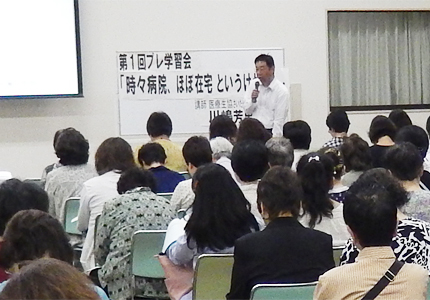

|
|
10月に開催される第50回埼玉県消費者大会を前に、大会に向けた第1回プレ学習会が5月27日（火）午前10時から与野本町コミュニティセンター多目的室で開催されました。 「時々病院、ほぼ在宅 というけれど・・・現場の方から聞く これからの医療・介護」をテーマに、医療生協さいたま生活協同組合 本部けんこう文化部の川嶋芳男さんを講師に150人が参加しました。  2015年から介護保険制度が改正されます。これまでの要支援1、2について、「介護予防」から「地域支援事業」への切り替えで、国から地方自治体に責任が移されます。急速に進む高齢化、社会保障費用の増大への対応として、改正介護保険法がこの5月、衆議院を通過しました。 これにより、これからの医療、介護はどう変わるのか、くらしへの不安もあるなかでの学習会となりました。 はじめに川嶋さんは、「医療・介護総合推進法案」が参議院での審議を待つばかりの状態になっていることに触れ、「今までにないスピード感で、法律が出来上がっています」と現状を述べました。 今回の「医療・介護総合推進法案」は、前の民主党政権時に、社会保障制度の改革を進めるうえで国民会議の設置と消費税の増税が決まりました。その中で2012年から一年で理念と改革計画が話され、2013年社会保障制度改革スケジュール法が成立、保険、生活保護、年金についても検討されてきました。そして2014年「医療・介護総合推進法案」が国会に提出された経過を紹介しました。 「医療・介護総合推進法案」とは 今回の医療・介護総合推進法案は、19の法律改正を医療法と介護保険法を中心におこなおうとするものです。そのベースは社会保障制度改革推進法の中の「自助」・「共助」・「公助」の最適な組み合わせに留意して形成されるべきという考え方で、まずは生活を自らと家族相互を基本とし、地域で支える仕組みとして「地域包括ケアシステム」を構築するというものです。 2013年の生活保護法の改正では、不正受給防止対策について市民の通報も条例に盛り込まれていました。 どう変わるの？医療と介護 それでは、医療、介護はどう変わるのか？！ 川嶋さんは、「地域包括ケアシステムで計画される病床や医師の数、2014年度の診療報酬改定から入院基本料の基準が厳格化され、病床の機能分化(高度急性期病床・一般病床・療養病床)によって退院や転院を迫られる状況や、特別養護老人ホームの新規入所が基本「要介護度3以上に限定」され、訪問、通所介護が使えなくなったり、介護サービスの負担割合が2倍、「補足給付の見直し」では個人の資産を箪笥預金の額まで申請が必要になる」と、法整備の検討内容をもとに話 されました。 |